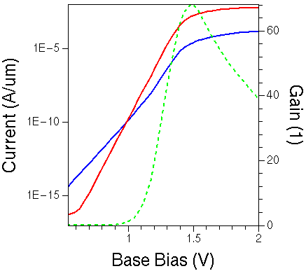

Sentaurus Device
4. Heterostructure Simulations
4.1 Gummel Plot Simulations of GaAs/AlGaAs HBT
4.2 Model Parameter Definitions for Nonsilicon Material
Objectives
- To introduce heterostructure simulations in Sentaurus Device.
4.1 Gummel Plot Simulations of GaAs/AlGaAs HBT
Sentaurus Device can simulate devices containing arbitrary semiconductor materials, including material heterojunctions.
The same carrier transport model equations as specified in the global Physics section (by default, drift diffusion) are solved in all semiconductor materials.
This GaAs/AlGaAs heterojunction bipolar transistor (HBT) example, which illustrates the specific aspects of heterojunction device simulation, can be found in the directory Applications_Library/GettingStarted/sdevice/HBT_Gummel.
Click to view the primary file sdevice_des.cmd.
4.1.1 Electrode Section
Electrode names and the initial-voltage boundary conditions are set for the three terminals of the HBT in the Electrode section of the command file:
Electrode{
{ Name="emitter" Voltage=0 }
{ Name="base" Voltage=0 }
{ Name="collector" Voltage=0 }
}
4.1.2 Global Physics Section
The physical models specified in the global Physics section are valid for the entire device:
Physics {
Hydro(eTemperature)
Mobility(
eHighFieldsaturation(CarrierTempDrive)
hHighFieldSaturation
)
Recombination(
SRH
Radiative
Auger
)
EffectiveIntrinsicDensity(Nobandgapnarrowing)
}
For most heterostructure device simulations with high-mobility materials, using hydrodynamic transport is recommended. In this example, the electron carrier-energy equation is solved in all semiconductor materials in addition to the standard drift-diffusion carrier transport.
The Hydro(eTemperature) carrier transport model can only be specified globally for the entire device.
For direct bandgap semiconductors, radiative recombination is a key mechanism. It is activated with the keyword Radiative specified in the Recombination section. The Nobandgapnarrowing option deactivates the bandgap narrowing model in the simulation.
For heterostructure device simulations with abrupt interfaces, typical for III–V HFET devices, it is recommended to switch on thermionic interface conditions using the keyword Thermionic in the global or interface-specific Physics section.
4.1.3 Materialwise Physics Section
A Physics section with a material qualifier activates additional physical models in all the device regions containing that material. These models are added to those that have been specified in the global Physics section:
Physics( Material= "GaAs" ) {
Mobility(DopingDep)
}
In this example, the doping-dependent mobility model is activated only in GaAs material. This means, in all other materials, the carrier mobilities are assumed to be independent of the doping concentration. To have a doping-dependent mobility model activated globally, the DopingDep option must be specified in the global Physics mobility section.
4.1.4 Regionwise Physics Section
A Physics section with a region qualifier activates additional physical models in the specified region in addition to those defined in the global Physics section:
Physics( Region= "AlGaAs_Emitter" ) {
MoleFraction(
XFraction=0.3
Grading(
(RegionInterface = ( "GaAs_Emitter_Cap" "AlGaAs_Emitter" )
XFraction=0.0 GrDistance=0.10)
(RegionInterface = ( "GaAs_Base" "AlGaAs_Emitter" )
XFraction=0.0 GrDistance=0.025)
)
)
}
A regionwise Physics section overrides a materialwise Physics section if their definitions overlap.
In the above specification, the aluminum mole fraction in the AlGaAs emitter region is set to 0.3 by XFraction. This indicates that the material is composed as Al0.3Ga0.7As.
The Grading statement indicates that the emitter aluminum fraction reduces linearly from 0.3 to 0 towards both the emitter–base and the emitter–emitter cap interfaces. The grading reaches the bulk value (0.3) at a distance of 0.025 μm and 0.1 μm from the two respective interfaces, as specified by the keyword GrDistance.
If you specify more than one interface definition in the
Grading statement, as in this example, all the definitions must be
enclosed in separate parentheses:
Grading(
( interface1 )
( interface2 )
...
)
{kind=link}
Figure 1. Aluminum mole-fraction distribution inside the AlGaAs layer taken along the A-A' cross section. (Click image for full-size view.)
4.1.5 Interface Physics Section
The Physics section with the RegionInterface qualifier activates extra physical models at the specified interfaces to those defined in the global Physics section:
Physics( RegionInterface = "Passivation/GaAs_Base" ) {
Traps(
(Donor Level fromCondBand
Conc=1e10 EnergyMid=0.61
eXsection=1e-12 hXsection=1e-12)
(Acceptor Gaussian fromValBand
Conc=1e10 EnergyMid=0.59 EnergySig=0.1
eXsection=1e-12 hXsection=1e-12)
)
}
Here, two trap types are activated at the "Passivation/GaAs_Base" region interface. The donor-type level trap energy is located 0.61 eV below the conduction band edge. The acceptor-type traps are Gaussian energy distributed with the energy peak located 0.59 eV above the valence band edge. For more details about the traps specification, see Section 13. Special Focus: Traps.
4.1.6 Math Section
In heterostructure simulations, it can be useful (from the convergence point of view) to tighten the error control over the electron and hole continuity equations by changing the corresponding ErrRef parameter values:
Math{
Extrapolate
NotDamped=200
Iterations=20
RelerrControl
ErReff(Electron) = 1.e8
ErReff(Hole) = 1.e8
}
A value of 1.e8 means that nodes with carrier concentrations greater than 108 cm-3 fully contribute to the error estimate. Reduce the value if low-density regions are critical to the device operation.
For a wide-bandgap heterostructure device simulation, such as a III–nitride HFET device, it is recommended to switch on extended precision arithmetics by specifying the option ExtendedPrecision in the Math section.
4.1.7 Solve Section
In this section, you specify the commands to perform the Gummel plot simulation (for more details, see Section 1.2.6 Solve Section):
Solve{
Coupled ( Iterations=100 ) { Poisson }
Coupled { Poisson Electron Hole eTemperature }
Plot(FilePrefix="n@node@_Ini")
NewCurrentPrefix=n@node@_init
Quasistationary(
InitialStep=1e-2 Increment=1.5
Minstep=1e-6 MaxStep=0.5
Goal{ Name="base" Voltage=0.5 }
Goal{ Name="collector" Voltage=3.0 }
){ Coupled { Poisson Electron Hole eTemperature } }
NewCurrentPrefix=""
Quasistationary(
InitialStep=0.05 Increment=1.5
Minstep=1e-8 MaxStep=0.05
Goal{ Name="base" Voltage=2.0 }
Goal{ Name="collector" Voltage=4.5 }
){ Coupled{ Poisson Electron Hole eTemperature } }
}
The simulation is split into two steps. In the first step, after building up the initial solution, the base and collector voltages are ramped up to 0.5 V and 3.0 V, respectively.
In the second step, the base and collector voltages are simultaneously increased further to 2.0 V and 4.5 V, respectively. During these bias ramps, a constant reverse bias of 2.5 V is maintained across the base–collector junction.
The last Sentaurus Visual project node produces the plot (see Figure 2) and extracts the maximal gain value. When the project has been run, click the Run Selected Visualizer Nodes Together toolbar button to recreate the plot.

Figure 2. Collector (red) current and base (blue) as a function of base bias for GaAs HBT. The green-dashed line shows the gain curve, calculated as Ic/Ib along the base bias sweep.
4.2 Model Parameter Definitions for Nonsilicon Material
This section explains how to access and edit model parameters for nonsilicon semiconductor materials, and how to set up and work with a custom material library.
Material parameters for III–V and II–VI semiconductors and their compounds are less well established compared to silicon. It is strongly recommended to carefully check the default model parameters for such materials before starting a device simulation.
4.2.1 Model Parameters for Elementary Materials and Binary Compounds
The section discusses the model parameters for elementary materials and binary compounds.
4.2.1.1 Generating the Default Material Parameter File
To generate the default material parameter file for a given material, material, type:
> sdevice -L:material
The following command generates the parameter file GaAs.par, which includes the default model parameters for GaAs material used by Sentaurus Device:
> sdevice -L:GaAs
Click to view the parameter file GaAs.par.
4.2.1.2 Modifying the Default Material Parameter File
For a nonsilicon simulation, the default behavior of Sentaurus Device is to use silicon parameters for models that are not defined for a simulated nonsilicon material.
This default behavior can lead to confusion, for example, when the silicon band gap is substituted for the actual target material band gap in the case when this quantity is omitted from the parameter file.
To avoid such inconsistencies, Sentaurus Device has a list of critical models for which a set of parameter values must be explicitly specified in the parameter file. If such parameters are not found, the simulation will stop with an error message. Refer to the Sentaurus™ Device User Guide to see the list of critical models, whose parameters are checked out at the beginning of the simulation.
To switch off this checking procedure, specify -CheckUndefinedModels in the Math section of the command file.
Parameter are grouped into sections inside a material parameter file. Each section defines the parameter set used by a specific physical model. If a model parameter section is missing in a material parameter file, you can add it from the silicon parameter file, which can be generated with:
> sdevice -P
This command generates the models.par file, which contains the full set of model parameters valid for silicon material. Copy the missing section from this file to your nonsilicon material parameter file and modify the parameter values accordingly.
Since the sdevice -P command generates the models.par file, ensure that no file with this name exists in the current working directory before executing the command. Otherwise, the file will be overwritten without warning.
4.2.2 Model Parameters for Ternary Compounds
The parameters for certain physical models, such as carrier mobility, semiconductor band structure, and density-of-states, are mole fraction dependent. Refer to the Sentaurus™ Device User Guide for a complete list of such models.
4.2.2.1 General Format
For ternary compounds such as AlxGa1–xAs, the mole fraction dependency of each parameter is represented as a piecewise cubic polynomial, that is, the mole fraction interval x ∈ [0,1] is divided into several sub-intervals as needed:
\[ x_{0} = 0,\html" " x_{1}, x_{2}, ..., x_{n} = 1 \]
Then, for each interval, the parameter is calculated as a function of the mole fraction x according to the following polynomial:
\[ P(x) = P_{i-1} + A Δx + B_{i} Δx^{2} + C_{i} Δx^{3} \]
where:
- \( Δx = x - x_{i-1} \).
- \( P_{i-1} \) is the parameter value at \( x = x_{i-1} \).
- \( B_{i}\) and \( C_{i}\) are the coefficients defined for the interval \( x_{i-1} < x < x_{i} \).
The values of \( P_{i-1} \), \( B_{i} \), and \( C_{i} \) must be defined in the parameter file for each interval.
The linear coefficient \(A\) is determined by the boundary condition that the function is continuous at the interval boundaries.
For example, the bandgap specification for AlxGa1–xAs reads:
Bandgap {
Xmax(0) = 0.0000e+00 # [1]
Eg0(0) = 1.42248 # [eV]
Xmax(1) = 0.45 # [1]
Eg0(1) = 1.98515 # [eV]
B(Eg0(1)) = 0.0000e+00 # [eV]
C(Eg0(1)) = 0.0000e+00 # [eV]
Xmax(2) = 1 # [1]
Eg0(2) = 2.11 # [eV]
B(Eg0(2)) = 0.143 # [eV]
C(Eg0(2)) = 0.0000e+00 # [eV]
}
In this example, two intervals are defined. The first extends from x = 0 to x = 0.45 and the second extends from x = 0.45 to x = 1. In the first interval, the parameter Eg0 is a linear function of the mole fraction (B(Eg0(1)) = 0 and C(Eg0(1)) = 0). In the second interval, the mole fraction dependency is a polynomial of the second order (B(Eg0(2)) = 0.143 and C(Eg0(2)) = 0).
4.2.2.2 Fixed Mole Fraction
In many applications, the mole fraction of a ternary compound is fixed, for example, the value of the mole fraction is dictated by conditions such as a lattice match of the ternary compound to other materials.
If the mole fraction is fixed, it is possible and convenient to define all the material parameters for this fixed mole fraction. The parameter file can be saved in the same format as the parameter file for an elementary material or a binary compound.
For example, the band-structure definition for Ga0.51In0.49P can be defined as:
Bandgap {
# Values are for Ga_0.51In_0.49P
Chi0 = 4.07 # [eV]
Bgn2Chi = 0.5 # [1]
Eg0 = 1.9 # [eV]
alpha = 5.4050e-04 # [eV K^-1]
beta = 2.0400e+02 # [K]
Tpar = 0.0000e+00 # [K]
}
4.2.2.3 Linear Mole Fraction Dependency
If the model parameter is a linear function of the mole fraction, a simplified syntax can be used. In this case, it is sufficient to define only the values for the two ends, that is, x = 0 and x = 1.
For example, the dielectric permittivity for AlxGa1–xAs reads:
Epsilon {
epsilon(0) = 13.18 # [1]
epsilon(1) = 10.06 # [1]
}
4.2.3 Quaternary Compounds
This section discusses the mole fraction dependency for quaternary compounds.
4.2.3.1 General Format
Sentaurus Device supports 2:2, 3:1, and 1:3 quaternary compounds, such as InGaAsP and InGaAlAs (refer to the Sentaurus™ Device User Guide). For quaternary compounds, mole fraction–dependent parameters are determined by interpolating from the relevant ternary 'side' materials.
For example, for a 2:2 quaternary compound such as In1–xGaxAsyP1–y, the 'side' materials result from setting one of the mole-fraction parameters to 0 or 1:
x=0: InAsyP1–y
x=1: GaAsyP1–y
y=0: In1–xGaxP
y=1: In1–xGaxAs
Refer to the Sentaurus™ Device User Guide for details about the interpolation formulas for 1:3, 2:2, and 3:1 quaternary compounds.
4.2.3.2 Fixed Mole Fractions
In some applications, the mole fraction of a quaternary compound is fixed, for example, the value of the x– and y–mole fractions is dictated by conditions such as a lattice match of the compound to other materials.
In the case previously described, it is convenient to define all material parameters for the fixed mole fraction, and the parameter file for the quaternary compound has the same format as the parameter file for an elementary material or a binary compound.
4.2.3.3 Dependent Variations of X and Y
In some applications, the x– and y–mole fractions of a quaternary compound
(for example,
In1–xGaxAsyP1–y)
are linked and graded dependently. For example:
\[ \table 0 < t < 1 ; x= 0.47 t ; y = 1 -0.3t \]
In such a case, it is convenient to define an effective ternary compound, InGaAsP(t). Refer to the Sentaurus™ Device User Guide for details about how to define such materials.
4.2.4 Working With a Material Library
It is recommended that a user or a group of users creates a custom material library that contains calibrated material parameters for the materials used in heterostructure device simulations.
A custom material parameter file can be imported into a Sentaurus Device parameter file with the Insert command. For example:
Material = "GaAs" { Insert="GaAs.par" }
Region = "AlGaAs_Emitter" { Insert = "AlGaAs.par" }
RegionInterface = "Passivation/GaAs_Base" { Insert = "GaAs%Si3N4.par" }
Be aware that the inserted parameter file cannot be parameterized using the standard Sentaurus Workbench parameterization capabilities.
The custom material parameter file can reside either in a project directly or in a central location. If Sentaurus Device cannot find an inserted material parameter file in the current working directory, Sentaurus Device looks in the directory specified by the environment variable SDEVICEDB. Therefore, for custom material parameter files stored in a central location, you must define SDEVICEDB accordingly,for example:
> setenv SDEVICEDB /home/MatLib
Custom default material parameter values are overwritten if the specification of the new parameters appears after the insertion of the custom material parameter file:
Region = "GaAs_Base" {
Insert="GaAs.par"
Scharfetter * relation and trap level for SRH recombination:
{ * tau = taumin + ( taumax - taumin ) / ( 1 + ( N/Nref )^gamma)
* tau(T) = tau * ( (T/300)^Talpha ) (TempDep)
* tau(T) = tau * exp( Tcoeff * ((T/300)-1) ) (ExpTempDep)
taumin = 0.0000e+00 , 0.0000e+00 # [s]
taumax = 1.0000e-10 , 1.0000e-10 # [s]
...
}
Click to view the parameter file sdevice.par. This parameter file is from the HBT_Gummel project.
Even though a custom material parameter file that is loaded using the Insert command cannot be parameterized, Sentaurus Workbench parameterization is available for local redefinitions. For example:
Region = "GaAs_Base" {
Insert="GaAs.par"
Scharfetter * relation and trap level for SRH recombination:
{
taumax = @tau@ , @tau@ # [s]
}
}
Instead of Insert, you can use the #include Sentaurus Workbench statement. For example:
Region = "AlGaAs_Emitter" {
#include "AlGaAs.par"
}
This allows you to introduce parameters also in the included file.
Copyright © 2022 Synopsys, Inc. All rights reserved.